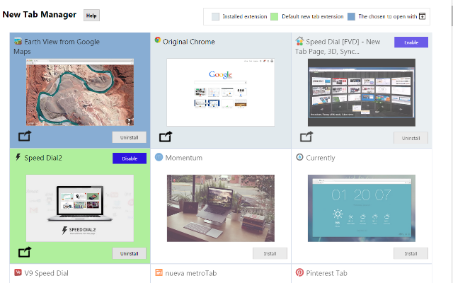

Novedades Extensión ORIGINAL NEW TAB
Estas viendo esta página porque tienes instalada la extensión ORIGINAL NEW TAB, perdona si te molesta, no volverás a verla al menos que vuelvas a instalar la extensión.
Nueva extensión NEW TAB MANAGER para gestionar las extensiones de "Nueva Pestaña".

- Esta extensión es una evolución de la extensión "Origina New Tab" que estás usando.
- Podrás asignar al icono de la extensión, la extensión de nueva pestaña que quieras no sólo la original de chrome, de esta manera podrás usar fácilmente dos extensiones de nueva pestaña al mismo tiempo y no tener que elegir sólo una.
- Desde la página de opciones de la extensión podrás instalar/desinstalar extensiones de nueva página y probarlas momentáneamente sin asignarlas al icono.
- Haz click aquí para probarla